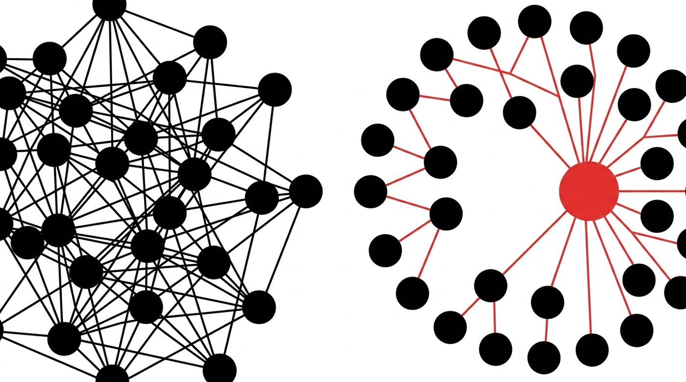
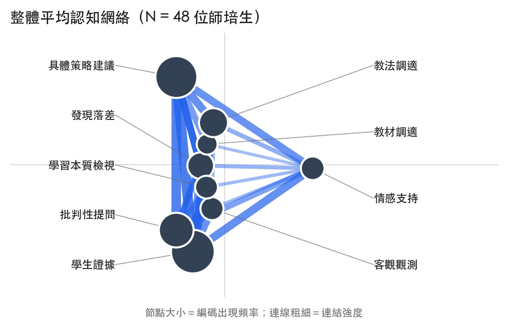
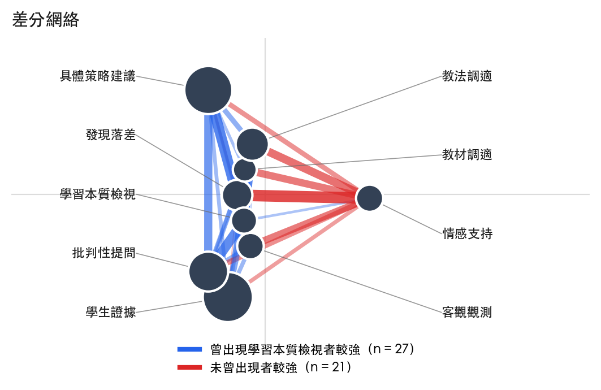

不使用自陳量表。能動性操作化為「證據所連向的去向」：接到質疑與建議，或接到肯定與鼓勵。左圖為成分彼此互連的結構，右圖為所有成分都連向同一點的結構。

兩項構念的操作型定義，皆由網絡的相對組成推導，不另行施測。
九個編碼分屬三個功能層次：反思依據（學生證據、客觀觀測、發現落差）、知識翻新行動（批判性提問、具體策略建議、情感支持）、調適取向（教材調適、教法調適、學習本質檢視）。
共享能動性取其在知識翻新理論中的核心意涵，即對社群知識物件提出質疑並貢獻可改進的想法。本計畫據此計算「證據導向能動性比率」：在一位師培生所有由反思依據出發的連結中，連向批判性提問或具體策略建議者所占的比例；其餘則連向情感支持。比率愈高，代表其援引證據時愈傾向推進知識，而非停留於肯認。
分析單位為個別師培生（N = 48）。連結於各回饋脈絡內以累積視窗計算，經球面正規化後轉為相對組成。
全體師培生的證據導向能動性比率平均為 .75（SD = .13），亦即當他們援引學生的學習表現時，該證據平均有四分之三接到批判性提問或具體策略建議。
更重要的是個別差異：比率最低者僅 .18，最高者達 .86。同樣都在寫回饋，有人的證據幾乎全數推進為質疑與改進，也有人的證據多半停在肯定。這項差異不需要問卷即可辨識。
以整體網絡計算，證據連向質疑與建議的權重占比（M = .224）與證據連向情感支持的權重占比（M = .078）之間，相關為 r = −.795（p < .001）。
證據不是連向質疑，就是連向肯定，兩者少有並存。這意味著在同儕回饋的情境中，認識論意義上的能動與關係性的維繫並非相輔相成，而是彼此排擠的兩條路徑。

依是否曾在回饋中檢視學習本質，將師培生分為兩組。未曾觸及該層次者，其證據連向情感支持的權重占比顯著較高（.095 對 .064，p = .016, r = .349）。
就本計畫所關切的構念而言，這條結果比原先以網絡位置所做的組間比較（p = .071）更為清楚：區辨兩組的並不是誰寫得比較有結構，而是證據被送往哪裡。

若要提高共享能動性，介入點在反思提問，而不在增加反思時數。
本課程階段五的兩道反思提問只要求提出問題與給出建議，回饋者因而可以跳過問題的標定，直接給做法，或直接給肯定。建議在兩者之間插入落差陳述：先問觀察到哪些學生的具體表現，再問這些表現與該組的教學預期有何差異、對其教學設計假設意味著什麼，最後維持原有的「請提供一項具建設性的建議」。
改寫一份表單幾乎沒有成本，卻等於由課程設計代替回饋者承擔提出質疑的責任。
整合心態未能由本語料有效辨識。本計畫嘗試了三種操作型定義：跨層次連結占比在 48 人之間幾乎沒有變異（變異係數 .012），屬編碼架構本身的性質而非個人特質；三橋均勻度與編碼涵蓋數雖有變異，但與回饋書寫量的相關高達 .61 與 .78，實質上測到的是「寫得多寡」。就本計畫現有的語料而言，整合心態尚無法與書寫量分離，需另以課程前後測資料或知識論壇語料檢驗。
共享能動性指標亦受書寫量影響。證據導向能動性比率與總編碼數的皮爾森相關為 .52；惟等級相關為 .28（p = .055），顯示線性相關主要由少數極端值推動。上述指標宜視為探索性測量。
本研究另為橫斷設計，無法確認因果方向；N = 48 檢定力有限；分組為二分處理，未反映程度差異。